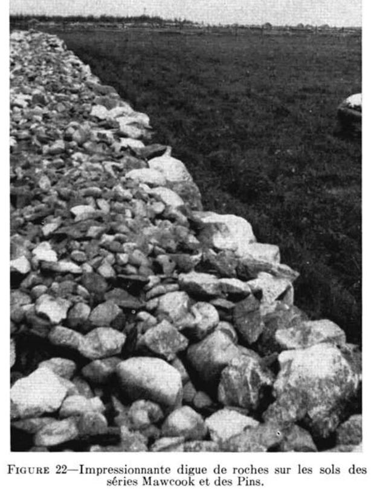
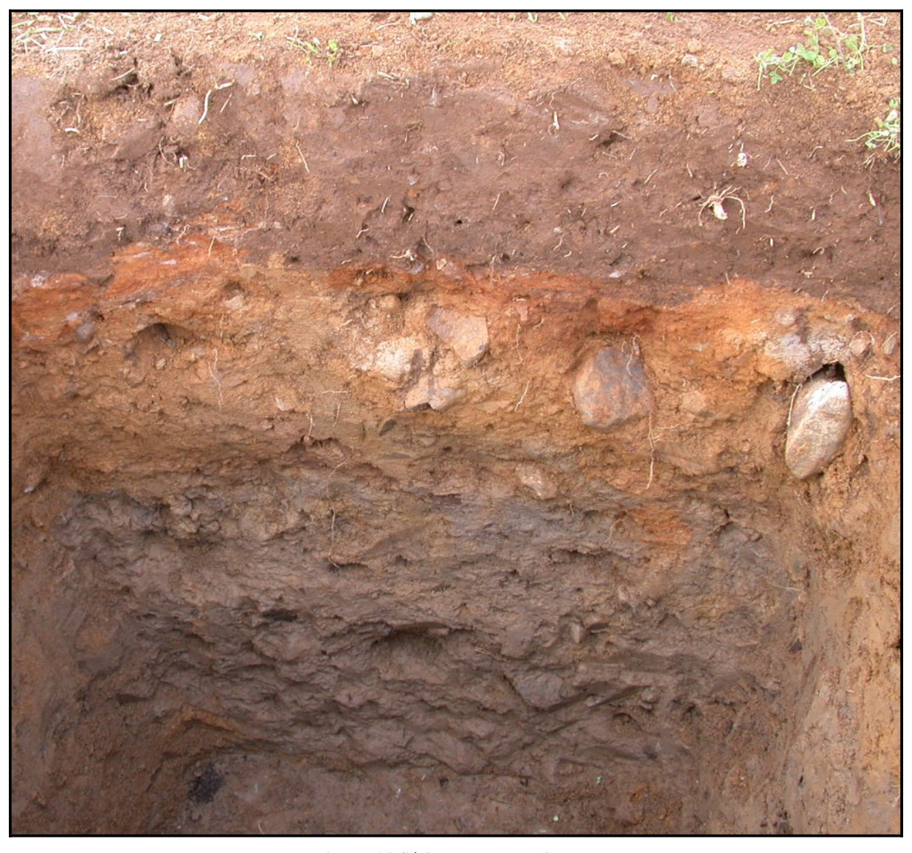

Identification & Caractéristiques Générales
La série Des Pins s'est développée sur un till loameux à sable loameux, pierreux et d'origine morainique, dont le matériau parental a souvent été remanié par les eaux de la mer Champlain. Ce dépôt se distribue sur des topographies de terrains fortement ondulés à légèrement vallonnés, occupant spécifiquement les secteurs de pentes faibles à modérées variant généralement de 0,5 % à 5 %, ainsi que les positions de moyen de pente. Ce profil constitue le membre modérément bien à imparfaitement drainé d'une caténa régionale associant les séries Dosquet aux sommets et Mawcook dans les dépressions.
Sur le plan morphologique, le profil présente une couche arable (Ap) d'environ 15 cm constituée d'un loam sableux brun foncé, caractérisé par une structure meuble et une charge graveleuse et caillouteuse représentant environ 10 % du volume. Cet horizon de surface montre une réaction variant de faiblement à fortement acide et une teneur appréciable en matière organique. Le sous-sol immédiat montre une zone de transition podzolisée et gleyifiée (Bfgj), d'épaisseur semblable, marquée par des mouchetures redoximorphiques témoignant d'une battement temporaire de la nappe phréatique. Le substratum (Cg), observable dès 40 cm de profondeur, consiste en un till meuble de texture loam sableux à sable loameux, fortement gorgé de fragments grossiers (20 % à 40 % en volume) et affecté par la gleyification. La perméabilité est modérée, mais la présence d'un régime hydrique imparfait requiert une gestion attentive de l'eau.
Sur le plan agronomique, la série Des Pins présente des aptitudes favorables pour la production de grandes cultures, de céréales et de plantes fourragères, sous réserve de la mise en place d'un réseau de drainage souterrain adéquat pour corriger l'excès d'eau printanier et saisonnier. Les contraintes majeures à la mise en valeur agricole résident dans la pierrosité abondante de la matrice et du substrat, qui nécessite des épierrages réguliers pour minimiser l'usure des équipements aratoires, ainsi que dans l'acidité marquée du profil exigeant des apports calciques réguliers (chaulage). Des programmes de fertilisation minérale phosphatée et organique (fumier) sont également indispensables pour soutenir les rendements des cultures.
Caractères Distinctifs & Morphologie Génétique (Comté de Dorchester — Page 73)
- Topographie : légèrement ondulée
- Drainage : imparfait
- Pierrosité : modérément pierreux — 1
- Grand-groupe génétique : podzol
- Degré d'érosion : nul
- Classes d'utilisation : (C) 3W (Q) 3d
- Association géographique : Dosquet, Mawcook
- Végétation naturelle : érables, épinettes, hêtres
Classification Taxonomique & Environnement Pédologique
| Ordre Pédologique | Podzolique |
|---|---|
| Grand Groupe (SCSS) | Podzol humo-ferrique |
| Sous-Groupe Taxonomique | Podzol humo-ferrique gleyifié |
| Famille Pédologique | Loameuse-grossière, mixte sableux, acide |
| Mode de Dépôt Parental | Morainique |
| Classe de Drainage Naturel | Imparfaitement drainé |
| Régime Thermique & Humidité | Frais / Perhumide |
Description Morphologique du Profil Type
Séquences génétiques des horizons pédologiques caractérisant le profil type représentatif de la série Des Pins :
Profil forestier / boisé — Comté de Dorchester
✓ Source : Comté de Dorchester — Page 73Couleur Munsell : 2.5YR 2/1
Structure & Consistance : Polyédrique à granulaire
Description morphologique : Humus noir-rouge (2.5YR 2/1); sans structure; friable; pH: 4.3
Couleur Munsell : 5YR 6/1
Structure & Consistance : Polyédrique à granulaire
Description morphologique : Loam pierreux gris (5YR 6/1); sans structure; friable; pH: 4.0.
Couleur Munsell : 2.5YR 3/2, 2.5YR 2/2
Structure & Consistance : Polyédrique à granulaire
Description morphologique : Loam pierreux rouge sombre (2.5YR 3/2) à rouge très sombre (2.5YR 2/2); sans structure; friable; pH: 4.5.
Couleur Munsell : 10YR 5/6 (matrice), 5YR 5/4 (marbrures)
Structure & Consistance : Polyédrique à granulaire
Description morphologique : Loam sableux pierreux brun-jaune (10YR 5/6) avec mouchetures de couleur brun-rouge (5YR 5/4); sans structure; légèrement ferme; pH: 4.7.
Couleur Munsell : 10YR 4/1 (matrice), 10YR 4/3 (marbrures)
Structure & Consistance : Polyédrique à granulaire
Description morphologique : Sable loameux pierreux à loam sableux pierreux gris foncé (10YR 4/1) avec mouchetures de couleur brun foncé (10YR 4/3); faiblement lamellaire; ferme; pH: 5.4.
Profil représentatif — Comté de Lévis
✓ Source : Comté de Lévis — Page 77Couleur Munsell : 10YR 3/2
Structure & Consistance : Polyédrique à granulaire
Description morphologique : Loam sableux brun gris très foncé (10YR 3/2). Granulaire et friable; pH: 5.2.
Couleur Munsell : Non précisée
Structure & Consistance : Polyédrique à granulaire
Description morphologique : Horizon discontinu. Loam sableux gris, sans structure; friable; pH: 4.8.
Couleur Munsell : Non précisée
Structure & Consistance : Polyédrique à granulaire
Description morphologique : Loam sablo-graveleux et pierreux avec taches de rouille. Coloration variée selon la variété des pierres. Granulaire et friable; pH: 6.0.
Couleur Munsell : Non précisée
Structure & Consistance : Polyédrique à granulaire
Description morphologique : Loam sablo-graveleux et pierreux avec taches de rouille. Cet horizon est parfois très graveleux et de ce fait est ouvert et très perméable; pH: 6.5 - 7.0.
Couleur Munsell : Non précisée
Structure & Consistance : Polyédrique à granulaire
Description morphologique : Roche-mère: till de loam sableux avec pierres de constitutions variées (grès rouges et verts de Sillery, grès, granites); pH: 7.0 - 7.2.
Profil naturel (vierge) — Comté de Lotbinière
✓ Source : Comté de Lotbinière — Page 72Couleur Munsell : Non précisée
Structure & Consistance : Polyédrique à granulaire
Description morphologique : Feuilles et tiges non décomposées.
Couleur Munsell : Non précisée
Structure & Consistance : Peu développée
Description morphologique : Loam sableux brun foncé; humus moyennement décomposé; structure peu développée; friable, fragments de grès; pH : 4.4.
Couleur Munsell : Non précisée
Structure & Consistance : Polyédrique à granulaire
Description morphologique : Horizon discontinu. Loam sableux gris, sans structure; friable; pH : 4.8.
Couleur Munsell : Non précisée
Structure & Consistance : Polyédrique à granulaire
Description morphologique : Loam sableux graveleux et pierreux, avec mouchetures de rouille, contenant parfois des lentilles de texture argileuse et de consistance plastique. La coloration varie, à cause des pierres dont les couleurs sont variées, mais la teinte rougeâtre ou brun rouge prédomine; pH : 6.0 - 7.2.
Couleur Munsell : Non précisée
Structure & Consistance : Polyédrique à granulaire
Description morphologique : Horizon à peu près semblable au précédent, sauf que les couleurs sont de teintes plus pâles, les mouchetures de rouille sont même masquées par la teinte des pierres (grès surtout). Effervescence parfois avec HCl dilué; pH : 7.5 - 7.9.
Couleur Munsell : Non précisée
Structure & Consistance : Polyédrique à granulaire
Description morphologique : Roche-mère : till de loam sableux avec pierres de diverses teintes (grès rouges et verts de Sillery,) granites, grès et ardoises grises parfois calcaires; pH : 7.5-8.0.
Profil cultivé (agricole) — Comté de Mégantic
✓ Source : Comté de Mégantic — Page 64Couleur Munsell : 10YR 3/3, 10YR 5/2
Structure & Consistance : Polyédrique à granulaire
Description morphologique : Loam sableux fin brun foncé (10 YR 3/3 h), brun gris (10 YR 5/2 s); granulaire, fine, faible à modérée; très friable; racines très abondantes, fines, très fines et microscopiques, verticales et obliques; fragments grossiers, graveleux, environ 10% en volume; limite abrupte, onduleuse; épaisseur de 15 à 18 cm; faiblement acide.
Couleur Munsell : 5YR 4/4 (matrice), 5YR 6/4 (marbrures)
Structure & Consistance : Polyédrique à granulaire
Description morphologique : Loam sableux brun foncé (7,5 YR 4/4 h), brun clair (7,5 YR 6/4 s); marbrures fréquentes, fines, faibles; granulaire, fine, faible; friable; racines abondantes, fines, très fines et microscopiques, verticales et obliques; fragments grossiers, graveleux et caillouteux, environ 10% en volume; limite nette, onduleuse; épaisseur de 11 à 17 cm; moyennement acide.
Couleur Munsell : 10YR 5/5 (matrice), 5YR 7/3 (marbrures)
Structure & Consistance : Polyédrique à granulaire
Description morphologique : Sable loameux brun jaune (10 YR 5/5 h), gris rose à rose (7,5 YR 7/3 s); marbrures fréquentes, fines et moyennes, faibles et distinctes, brun vif (7,5 YR 5/6 h); très friable; racines peu abondantes, fines, très fines et microscopiques, verticales et obliques; fragments grossiers, graveleux, cherteux, caillouteux et pierreux, environ 10% à 20% en volume; limite nette, onduleuse; épaisseur de 6 à 40 cm; moyennement acide.
Couleur Munsell : 5Y 5/2 (matrice), 10YR 7/1 (marbrures)
Structure & Consistance : Lamellaire
Description morphologique : Loam brun gris (2,5 Y 5/2 h), gris clair (10 YR 7/1 s) et gris rouge foncé (5 YR 4/2 h); marbrures nombreuses, fines, moyennes et grossières, distinctes et marquées, brun vif (7,5 YR 5/6 h), olive pâle (5 Y 6/4 h); pseudo-structure lamellaire; ferme; racines très peu abondantes, fines, très fines et microscopiques, non orientées; fragments grossiers, graveleux, cherteux, caillouteux et pierreux, environ 20% à 30% en volume; moyennement acide.
Profil forestier (sous boisé) — Comté de Arthabaska
✓ Source : Comté de Arthabaska — Page 41Couleur Munsell : 10YR 2/2, 10YR 3/1
Structure & Consistance : Polyédrique à granulaire
Description morphologique : Horizon organique brun très foncé (10 YR 2/2 h), gris très foncé (10 YR 3/1 s); granulaire, très fine à fine, très faible; très friable; racines très abondantes, de toutes les gros, non orientées, exo-agrégat; fragments grossiers, à gravier anguleux, caillouteux et pierreux (blocailleux), moins de 10%; limite abrupte, ondulée; épaisseur de 2 à 7 cm; extrêmement acide.
Couleur Munsell : 10YR 6/2
Structure & Consistance : Polyédrique à granulaire
Description morphologique : Loam sableux gris-brun clair (10 YR 6/2 h); particulaire, sans structure, très friable; racines très abondantes, de toutes les grossseurs, non orientées, exo-agrégat; fragments grossiers, à gravier anguleux, caillouteux et pierreux (blocailleux), moins de 10%; limite abrupte, interrompue; épaisseur de 0 à 5 cm.
Couleur Munsell : 5YR 4/4 (matrice), 10YR 4/4 (marbrures)
Structure & Consistance : Polyédrique à granulaire
Description morphologique : Loam sableux brun-rouge (5 YR 4/4 h), brun-jaune (10 YR 4/4 s); quelques mouchetures, petites, faibles; granulaire, très fine, très faible; très friable; racines très abondantes, de toutes les grosseurs, non orientées, exo-agrégat; fragments grossiers, à gravier anguleux, caillouteux et pierreux (blocailleux), moins de 10%; limite nette, ondulée; épaisseur de 10 à 15 cm; très fortement acide.
Profil représentatif — Comté de Arthabaska
✓ Source : Comté de Arthabaska — Page 42Couleur Munsell : 10YR 5/3 (matrice), 10YR 6/2 (marbrures)
Structure & Consistance : Polyédrique à granulaire
Description morphologique : Sable loameux brun (10 YR 5/3 h), gris-brun clair (10 YR 6/2 s); mouchetures assez nombreuses, moyennes, distinctes, brun foncé (7,5 YR 4/4 h); particulaire, sans structure; friable; peu de racines, fines, très fines et microscopiques, non orientées, exo-agrégat; fragments grossiers, à gravier anguleux, caillouteux et pierreux (blocailleux), moins de 10%; limite nette, ondulée; épaisseur de 20 à 26 cm; fortement acide.
Couleur Munsell : 10YR 4/3 (matrice), 10YR 6/2 (marbrures)
Structure & Consistance : Polyédrique à granulaire
Description morphologique : Sable loameux brun foncé (10 YR 4/3 h) gris brun clair (10 YR 6/2 s); mouchetures assez nombreuses, petites, distinctes et très marquées, brun-jaune (10 YR 5/7 h); particulaire, sans structure; ferme; fragments grossiers, à gravier anguleux, caillouteux et pier-reux (blocailleux), environ 20%; fortement acide.
Profils Photographiques & Planches de Terrain
Documents iconographiques, figures pédologiques et coupes de terrain documentées dans les mémoires d'inventaire pour de la série Des Pins :


Propriétés Physico-Chimiques & Analyses de Laboratoire
| Horizon | Prof. (pces/cm) | Sable % | Limon % | Argile % | pH | C % | N % | Ca éch. | Mg éch. | K éch. | H+ éch. | Bases tot. | C.E.C. (meq/100g) | Saturation % | |
|---|---|---|---|---|---|---|---|---|---|---|---|---|---|---|---|
| Bois-Francs | 0-20 | 58 | 33 | 9 | 5,0 | 10,2 | 3,7 | 868 | 90 | 103 | 31 | 2,45 | 6 | 95 | 234* |
| 20-40 | 66 | 28 | 6 | 5,2 | 10,9 | 1,1 | 160 | 11 | 35 | 13 | 0,46 | 9 | 89 | 191* | |
| 40-60 | 66 | 26 | 8 | 5,3 | 10,3 | 0,7 | 92 | 9 | 39 | 14 | 0,31 | 7 | 72 | 181* | |
| Norbertville | 0-20 | 59 | 30 | 11 | 5,4 | 9,9 | 2,6 | 1 268 | 65 | 94 | 27 | 3,23 | 12 | 24 | 221* |
| 20-40 | 70 | 25 | 5 | 5,5 | 9,9 | 0,6 | 474 | 30 | 22 | 10 | 1,21 | 10 | 40 | 185* | |
| 40-60 | 69 | 23 | 8 | 5,6 | 9,3 | 0,2 | 651 | 44 | 33 | 13 | 1,68 | 9 | 85 | 187* | |
| Woodbridge | 0-20 | 42 | 44 | 14 | 5,0 | 10,3 | 4,5 | 1 349 | 255 | 101 | 23 | 4,11 | 3 | 17 | 265* |
| 20-40 | 51 | 36 | 13 | 5,1 | 10,9 | 1,4 | 356 | 53 | 42 | 19 | 1,07 | 4 | 47 | 212* | |
| 40-60 | 56 | 34 | 10 | 5,2 | 10,7 | 0,5 | 143 | 24 | 40 | 18 | 0,48 | 4 | 98 | 164* | |
| Sainte-Marie | 0-20 | 51 | 38 | 11 | 5,0 | 9,8 | 4,1 | 707 | 65 | 115 | 14 | 1,97 | 7 | 90 | 241* |
| 20-40 | 54 | 35 | 11 | 5,3 | 10,3 | 0,8 | 458 | 53 | 40 | 3 | 1,27 | 5 | 128 | 193* | |
| 40-60 | 54 | 34 | 12 | 5,6 | 10,0 | 0,6 | 470 | 34 | 33 | 7 | 1,22 | 8 | 182 | 190* | |
| Brompton | 0-20 | 58 | 29 | 13 | 5,4 | 9,8 | 10,7 | 6 527 | 236 | 161 | 39 | 15,69 | 17 | 35 | 273* |
| 20-40 | 56 | 32 | 12 | 5,6 | 9,9 | 1,3 | 1 720 | 35 | 61 | 11 | 4,06 | 30 | 72 | 185* | |
| 40-60 | 55 | 34 | 11 | 5,7 | 9,7 | 0,2 | 807 | 39 | 58 | 7 | 2,02 | 12 | 113 | 157* |
Particularités Régionales, Phases & Variantes Pédologiques
Déclinaisons régionales, faciès texturaux, phases d'érosion ou de pierrosité et variantes cartographiées par étude pour de la série Des Pins :
| Étude Régionale | Symbole | Appellation / Phase / Variante | Différenciation avec la série type (Analyse pédologique) |
|---|---|---|---|
| Comté de Arthabaska | Pi |
Des Pins loam sableux | Modalité modale de référence (type de base de la série). |
| Comté de Dorchester | Pi |
Des Pins loam pierreux | Phase pierreuse (abondance de cailloux et blocs en surface); Faciès loameux plus fin et équilibré que le loam sableux de référence (meilleure rétention en eau et nutriments). |
| Comté de Lévis | Pi |
Des Pins loam sableux pierreux | Phase pierreuse (abondance de cailloux et blocs en surface). |
| Comté de Lotbinière | Pi |
Des Pins loam sableux pierreux | Phase pierreuse (abondance de cailloux et blocs en surface). |
| Comté de Mégantic | Pi |
Des Pins loam sableux | Conforme à la série type de référence (caractéristiques texturales et drainage identiques). |
| Comté de Rouville | PN3 |
Des Pins loam | Faciès loameux plus fin et équilibré que le loam sableux de référence (meilleure rétention en eau et nutriments). |
| Bassin versant du Bras d'Henri | PIb |
Des Pins légèrement à modérément pierreux | Phase légèrement à modérément pierreuse (obstruction mécanique modérée). |
PIbp |
Des Pins pente de 3-8% légèrement à modérément pierreux | Phase légèrement à modérément pierreuse (obstruction mécanique modérée); Phase de pente (3-8%) avec risque de ruissellement et d'érosion hydrique accrue. | |
PIcp |
Des Pins pente de 8-15% légèrement à modérément pierreux | Phase légèrement à modérément pierreuse (obstruction mécanique modérée); Phase de pente (8-15%) avec risque de ruissellement et d'érosion hydrique accrue. | |
PItbp |
Des Pins tourbeux pente de 3-8% légèrement à modérément pierreux | Phase légèrement à modérément pierreuse (obstruction mécanique modérée); Phase de pente (3-8%) avec risque de ruissellement et d'érosion hydrique accrue; Phase tourbeuse en surface (accumulation de matière organique fibrique ou mésique mal décomposée). | |
| Étude pédologique du bassin vers | DSP |
Des Pins | Conforme à la série type de référence (caractéristiques texturales et drainage identiques). |
Distribution Pédo-Paysagère & Représentativité Cartographique (Couverture PPS 2026)
- Mawcook loam sableux (MWO) — co-occurrente dans 307 polygone(s)
- Dosquet loam sableux (DQT) — co-occurrente dans 258 polygone(s)
- Rosaire loam sableux graveleux (RSR) — co-occurrente dans 71 polygone(s)
Aptitudes Agronomiques, Hydropédologie & Conservation des Sols
Indicateurs Hydropédologiques & Vulnérabilité à l'Érosion (BDHP 2026)
Interprétation BDHP : Potentiel de ruissellement modérément élevé. Faible taux d'infiltration, présence d'horizons ralentissant le drainage descendant.
Classement selon l'Inventaire des Terres du Canada (ITC / CLI) : Classe 2w.
- Potentiel agricole : Terroir adapté aux cultures régionales selon la texture dominante et la régie de drainage.
- Contraintes majeures : Imparfaitement drainé. Risque d'engorgement temporaire ou d'excès d'eau printanier.
- Gestion & Aménagement : Drainage souterrain ou superficiel préconisé sur les terres planes. Chaulage et apport organique régulier selon les bilans agronomiques.
- Cultures adaptées : Grandes cultures (maïs, soya, céréales), prairies fourragères et cultures maraîchères selon le contexte géomorphologique.